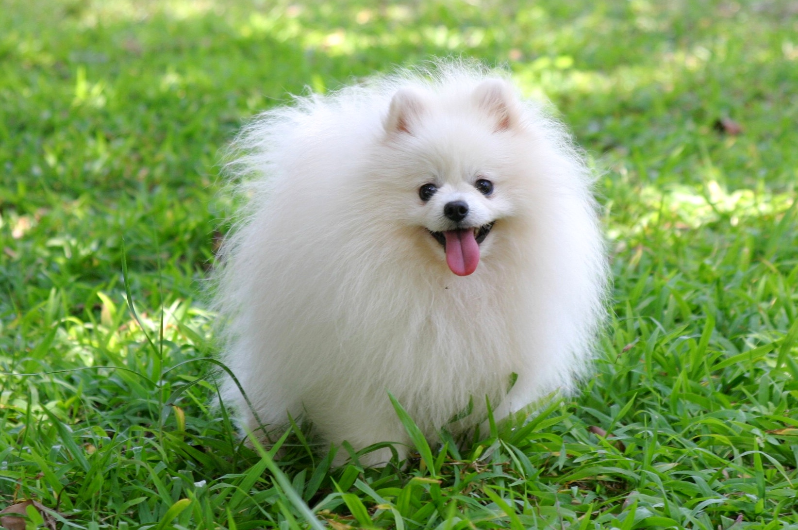

골든리트리버
 크기(키) : 수컷 56∼61cm, 암컷 51∼56cm
크기(키) : 수컷 56∼61cm, 암컷 51∼56cm
무게 : 수컷 29∼34kg, 암컷 25∼29kg
몸의 빛깔 : 광택 있는 황금색
분포지역 : 영국
기타정보 : 조립견 - 주로 조류사냥에 쓰인 개.
사냥꾼을 보조하여 사냥감을 찾아내거나 위치를 알려주고, 회수하는 일 등을 함.
닥스훈트
크기(키) : 수컷 23∼27cm, 암컷 21∼24cm
무게 : 5kg 이하(소형견), 5∼8kg(중형견)
몸의 빛깔 : 적색, 검은색, 황갈색, 호랑이 털색, 어두운 갈색
분포지역 : 독일
기타정보 : 수립견 - 발달된 시각 또는 후각을 이용하여 사냥에 이용되는 개. 시각하운드(휘핏, 그레이하운드 등)와 후각하운드(비글, 블러드하운드 등)로 나뉨.
말티즈
크기(키) : 20~25cm
무게 : 1.8~3.3kg(초소형견)
몸의 빛깔 : 순백색
분포지역 : 지중해 몰타섬
기타정보 : 테리어 계통과 외모가 비슷하지만, 튼튼하고 기질이 강한 스패니얼 종이다. 따라서 크기는 작지만 튼튼하며 쾌활하고 붙임성이 있어 지금도 애완견으로 큰 사랑을 받고 있다. 단 헛짖음이 많고 아이들에게 대드는 경향이 있으므로 주의해야 한다.
비숑프리제

크기(키) : 23∼30cm
무게 : 3∼6kg
몸의 빛깔 : 흰색
분포지역 : 스페인, 벨기에, 프랑스
기타정보 : 목을 당당하게 들고 쾌활하게 걸으며, 성격이 활발하고 영리하다. 예의바르고 행동이 민첩해서 서커스에도 출연하며 맹인 안내견으로 사육되기도 주인에게 충성심이 강하고 사랑이 많다.
비글
크기(키) : 33∼40㎝
무게 : 15∼20㎏
유래 : 비글(Beagle)이라는 이름은 '요란하게 짖는다'는 뜻 또는 '작다'를 나타내는 프랑스어에서 유래하였다는 설이 있다.
기타정보 : 수립견 - 발달된 시각 또는 후각을 이용하여 사냥에 이용되는 개. 시각하운드(휘핏, 그레이하운드 등)와 후각하운드(비글, 블러드 하운드 등)로 나뉨.
시바견

크기(키) : 수컷 38∼41cm, 암컷 35∼39cm
무게 : 7∼10kg
몸의 빛깔 : 연한 붉은색, 적갈색, 흑갈색, 얼룩무늬
분포지역 : 일본
기타정보 : 성격이 명랑하고 활발하다. 행동이 민첩하고 영리하며 감각이 예민해서 사냥개로 이용되었다. 일단 화가 나거나 어떤 상황에서는 앞뒤 안 가리고 돌진하는 습성이 있기 때문에 주의해야 한다. 주인에게 충실하면서 경계심이 강하고 귀소본능이 강해서 집 지키는 개로도 알맞다. 추위에도 잘 견디고 지구력이 강해 밖에서 기르기에 좋다.
시베리안허스키
크기(키) : 50~60cm
무게 : 16~27kg
외모 : 쫑긋한 귀와 빗자루 같은 꼬리, 적당한 근육을 가짐
성격 : 쌀쌀맞고 무뚝뚝하나 사람을 좋아하고 주인의 기분을 잘 헤아림
기타정보 : 사역견 - 수렵 이외의 각종 작업 또는 노동에 쓰기 위하여 사육하는 개.경찰견, 군용견, 경주견, 구조견, 맹인안내견, 썰매견 등
사모예드
크기(키) : 45~55cm
무게 : 23~30kg
외모 : 근육질에 가슴은 깊고 다리가 적당히 길며 알맞게 굽은 뒷무릎을 가짐.
성격 : 총명, 충직하고 역동적이며 우호적이며 적응을 잘함
기타정보 : 사역견 - 수렵 이외의 각종 작업 또는 노동에 쓰기 위하여 사육하는 개.경찰견, 군용견, 경주견, 구조견, 맹인안내견,썰매개 등
웰시코기
크기(키) : 25~30.5cm
무게 : 약13kg
외모 : 낮게 위치하며 튼튼하고 단단하고 작게 형성됨
성격 : 자신감 있고 친절하며 수줍거나 사납지 않음
기타정보 : 낮게 위치하고 튼튼하고 단단하게 형성되어 활동적이며, 작은 크기 안의 실질과 체력의 느낌을 주는 견종이다.자신감 있으나 친절하다. 수줍거나 사납지 않다.
포메라니안
크기(키) : 20cm
무게 : 1.3~3.2kg
외모 : 등이 짧고 장식깃털이 많은 꼬리, 조밀한 밑털과 풍성한 겉털을 가짐
성격 : 원기왕성하고 대담발랄하며 머리회전이 빠르고 곧잘 흥분함
기타정보 : 예전에는 주로 목양견(牧羊犬)으로 사육하였으나 현재는 애완용으로 기르고 있다.
푸들
크기(키) : 스탠더드: 키38.1cm 이상, 미니어처: 키25.4∼38.1cm, 토이: 키25.4cm이하
무게 : 스탠더드: 27.2~31.8kg(수컷) 18.1~22.7kg(암컷), 미니어처: 4.5~6.8kg, 토이: 1.8~2.7kg
몸의 빛깔 : 흰색, 검정색, 갈색, 은색, 크림색 등 10가지 단일 색
분포 지역 : 프랑스
기타정보 : 몸에 비해 상대적으로 작은 발을 가진다.사냥개 출신답게 매우 눈치가 빠르고 똑똑한 편이며, 성격은 활발하다.
프렌치불독
크기(키) : 25~32cm
무게 : 9~13kg
몸의 빛깔 : 얼룩무늬, 엷은 황갈색, 흰색, 검정
분포 지역 : 프랑스
기타정보 : 실내에서 기르기에 적당한 크기로 명랑하고 움직임이 빠르다. 단단한 체력을 가졌으며 활력이 넘친다. 장난을 좋아하나 짖는 일이 거의 없어 가정견으로 적합하다. 영리하고 용감하여 경비견으로 훈련시키기도 쉽다.